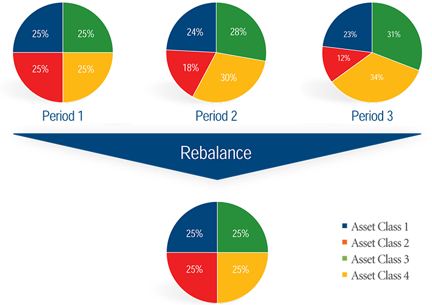
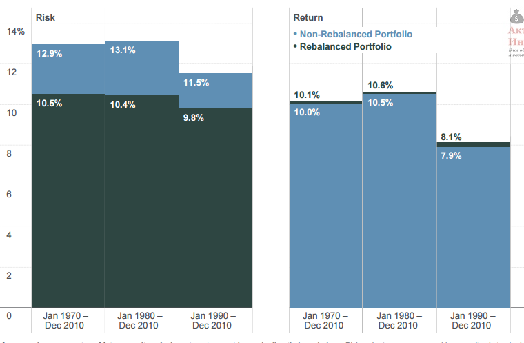
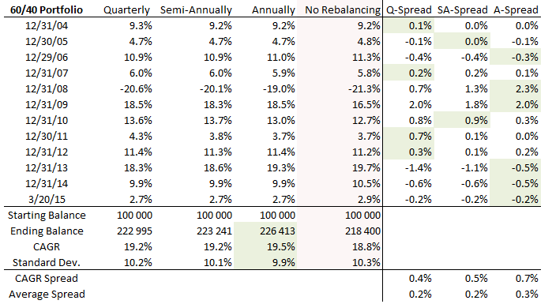
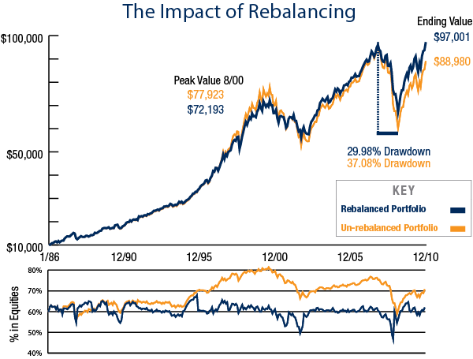

В прошлой статье вы узнали, что такое риск, и какую доходность могут приносить различные активы. Каждый класс активов характеризуется своим сочетанием риска и доходности, но чем больше риск, тем больше доходность. Исторически акции на длительном сроке обеспечивали наибольший доход, но имели высокий риск, а облигации наоборот — имели более низкую доходность и менее высокий риск.
За время инвестирования каждый актив, который был выбран в портфель, сгенерирует какую-то доходность. Сложно заранее сказать, какой доход принесет тот или иной класс активов, но можно ожидать, что скорее всего доходность акций будет больше, а доходность облигаций меньше. В результате этого доли активов в портфеле отклоняются от первоначальных. Поэтому периодически необходимо проводить ребалансировку — это процесс восстановления первоначальной структуры портфеля.
Эту операцию можно проводить двумя способами:
В результате этой операции портфель должен обрести первоначальное распределение активов. Для примера возьмем упрощенный портфель, первоначальная структура которого 50% акций и 50% облигаций. Допустим, через год акции выросли, и их доля стала 55%, а доля облигаций соответственно снизилась до 45%. Для восстановления первоначального баланса, продаются 5% акций и на них покупаются 5% облигаций.
Ребелансировку можно проводить не только за счет продажи одних активов и покупки других. Восстановить баланс портфеля можно за счет дополнительно внесенных средств, а так же за счет дивидендов и процентов.
Восстановление первоначальной структуры — очень важный момент в управлении портфелем. Он основывается на том, что активы характеризуются определенным уровнем риска и доходности, которым они подчиняются в долгосрочной перспективе, но от которых могут отклонятся на коротких промежутках времени. Акции могут сильно падать, но в долгосрочной перспективе они вероятно принесут большую доходность, чем облигации. Ребалансировка заставляет продавать то, что подорожало и покупать то , что подешевело, что на первый взгляд противоречит здравому смыслу. Но с другой стороны, при падении акций это заставляет нас покупать то, что в долгосрочной перспективе принесет нам большую доходность. В этом и есть смысл.
Еще одна причина для ребалансировки — это удержание риска портфеля на заданном уровне. Первоначально структура портфеля подбирается таким образом, чтобы уровень риска портфеля не выходил за границы, комфортные для инвестора. Если регулярно не проводить ребалансировку, за длительный промежуток времени доли активов могут измениться в такой степени, что изменят риск портфеля.
Например, если в 1990 году доля акций и облигаций в портфеле была 50:50, то уже через 5 лет в результате динамики рынка доля акций выросла бы до 63%, а еще через 5 лет до 71%.
Возросшая доля акций будет оказывать на портфель большее влияние чем раньше, а значит и риск портфеля тоже увеличится. Ниже можно сравнить риск и доходность портфеля с ребалансировкой и без нее. На всех временных отрезках риск портфеля с ребалансировкой был заметно ниже, а доходность даже немного выше.
Поэтому, чтобы держать риск портфеля на первоначальном уровне, нужно регулярно восстанавливать баланс активов.
К сожалению, никто достоверно не знает, когда выгоднее всего продать облигации и купить акции. Рынки постоянно находятся в динамике, впадая то в панику, то в депрессию, то в эйфорию. Попытки угадать удачный момент для покупки обычно не приводят к успеху. Поэтому чтобы не гадать, были придуманы два механизма ребалансировки: календарный и динамический.
Календарный механизм означает проведение ребалансировки регулярно через заданный промежуток времени — например раз месяц, квартал, полугодие или год. При этом инвестор выбирает конкретную дату, в которую восстанавливает баланс портфеля.
Если вы выберете календарную ребалансировку, то необходимо определиться с ее частотой. Расчеты различных экспертов показывают, что самым оптимальным периодом для восстановления баланса портфеля является год. Для примера можно привести портфель, состоящий из 60% акций/40% облигаций за период с 2003 по 2015 год. На картинке ниже показаны 4 портфеля с различной частотой ребалансировки: раз в квартал (quarterly), раз в полгода (semi-annualy), раз в год (yearly) и без ребалансировки.
Портфель, баланс которого восстанавливался раз в год, показал максимальную доходность из всех вариантов — 19,5%. Портфели с ежеквартальной и полугодовой ребалансировкой дали одинаковый результат 19,2%, а хуже всех оказался портфель без ребалансировки.
Почему так произошло? Более короткие промежутки времени снижают эффект ребалансировки, потому что активы не успевают отклониться от своей первоначальной доли в достаточной степени. Еще один повод не делать эту процедуру слишком часто — увеличение транзакционных издержек и налогов, которые снижают доходность.
Второй механизм — динамической, он не привязан к какой-либо дате или сроку. В этом варианте сигналом служит отклонение доли актива от первоначальной на определенный процент. Проведенные исследования показали, что оптимальное отклонение для проведения ребалансировки составляет 20%. К примеру, если доля акций в портфеле составляет 50%, то ребалансировку портфеля нужно проводить, когда доля акций превышает 60% или становится меньше 40%. Данный механизм исторически показывает чуть лучшие результаты, чем календартный метод, но при этом сложнее в плане реализации и требует регулярного мониторинга структуры портфеля.
Какой способ восстановления портфеля выбрать — личное дело каждого инвестора, но календарный метод более предпочтителен из-за своей простоты и достаточной эффективности.
Требуется сказать, что ребалансировка — спорный момент в стратегии управления портфелем. До сих пор ведутся споры о ее необходимости, так как она не всегда приносит ожидаемые результаты. На графике ниже показано поведение двух портфелей с 1985 по 2010 гг. Оба портфеля состоят из 60% акций и 40% облигаций. Разница в том, что один портфель никогда не ребалансировался, в то время как другой ежегодно восстанавливал свои пропорции.
К концу периода портфель с ребалансировкой оказался более результативен, но если обратить внимание на 2000-й год, такой портфель показал себя хуже. Это связано с сильным ростом на рынке акций в 90-е. Доля акций на пике составляла 80% (это видно на графике ниже).
Дело в том, что период 86-99 — это сильный бычий рынок акций. За это время акции по доходности сильно превосходили облигации. Ребалансировка заставляла продавать более доходный актив (акции) и покупать менее доходный актив (облигации). Это и снизило итоговую доходность. С 2000 по 2010 год акции находились в «боковике», пережив два кризиса. Итоговая доходность была не такой высокой как в предыдущем десятилетии. На этом периоде ребалансируемый портфель выиграл, потому что сильная волатильность акций позволяла покупать их очень дешево, что и сказалось на будущей доходности.
Из этих данных можно сделать следующий вывод: на рынке акций с восходящим трендом ребалансировка снижает доходность портфеля, но если случается кризис, то она приносит выигрыш. К сожалению, мы не знаем, какой рынок нас ждет впереди, поэтому желательно использовать ребалансировку.
Эффект от ребалансировки реализуется только в том случае, когда активы в портфеле ведут себя по разному в одинаковых условиях. Когда один актив падает, второй должен вырасти или как минимум не упасть. Это требует выбирать в портфель фундаментально разные активы, которые отличаются динамикой стоимости. Как найти найти и подобрать активы, стоимость которых меняется не синхронно, вы узнаете из следующей статьи.